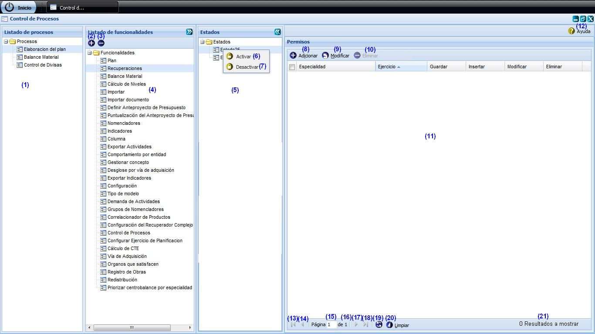
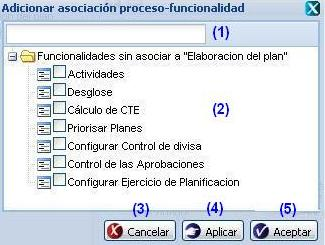
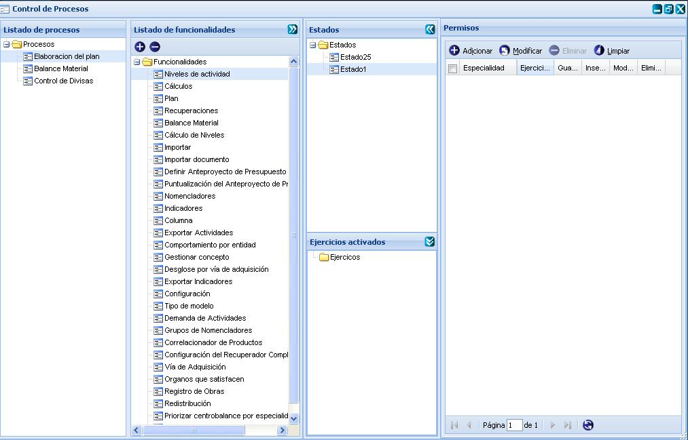
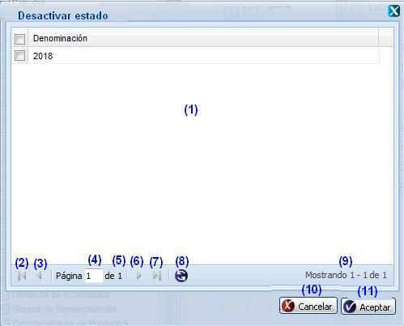
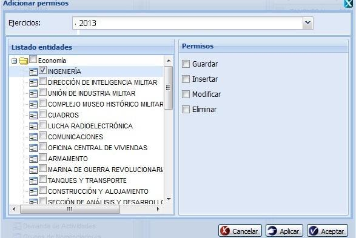

--Control de procesos--
Para llegar a la funcionalidad se puede acceder a través de la opción Inicio/Planificación material/Configuraciones/Control de procesos . Una vez accedida a la misma el sistema le mostrará la interfaz que aparece en la figura 1.

Figura 1. Interfaz y acciones del módulo Control de procesos.
Nota: cada una de las funcionalidades a ejecutar en dicha interfaz, serán realizadas por el usuario rector.
Las diferentes opciones que conforman la figura anterior permiten:
- Listar los procesos gestionados con anterioridad en grupo de nomencladores. Estos procesos serán los insertados en el nomenclador de Procesos planificación en el módulo grupo de nomencladores.
- Adicionar funcionalidad, ver Adicionar funcionalidad, esta acción permite adicionar una o varias funcionalidades a un proceso determinado, para ello el sistema le mostrará una interfaz, cuando se presione la opción Aceptar o Aplicar de dicha interfaz el sistema le mostrará un mensaje de información notificando que adicionó la funcionalidad satisfactoriamente.
- Eliminar una funcionalidad previamente seleccionada en el listado mostrado en el panel Listado de funcionalidades. Esta opción permite eliminar la(s) funcionalidad(es) deseada(s), una vez seleccionada(s) la(s) misma(s) se procede a seleccionar la opción Eliminar de la interfaz, automáticamente se mostrará un mensaje de confirmación, que se puede Aceptar o Cancelar según sea el caso, de presionar la opción Aceptar el sistema le mostrará un mensaje de información sobre el éxito de la operación realizada, quedando eliminada(s) la(s) funcionalidad(es) seleccionada(s), si cancela el mensaje de confirmación, el sistema permanece en la interfaz y no elimina la(s) funcionalidad(es). Para ejecutar esta funcionalidad es importante tener en cuenta las siguientes precondiciones y validaciones:
Precondiciones:
- Se debe haber adicionado al menos una funcionalidad a un proceso.
Validaciones:
- La opción Eliminar solo se le habilitará una vez seleccionada al menos una funcionalidad de las listadas.
- Listar funcionalidades previamente insertadas en el sistema. Estas funcionalidades serán listadas en dependencia del procesos seleccionado en el panel Listado de procesos.
- Listar estados gestionados con anterioridad en grupo de nomencladores. Estos estados serán los insertados en el nomenclador de “Estados para Control de procesos” en el módulo grupo de nomencladores.
- Activar un estado previamente seleccionado en el listado, ver Activar estado, esta acción permite activar un estado determinado, para ello el sistema le mostrará una interfaz, cuando se presione la opción Aceptar o Aplicar de dicha interfaz el sistema le mostrará un mensaje de información notificando que activó el estado satisfactoriamente. Se puede realizar esta operación seleccionando la combinación de teclas (Alt + T).
- Desactivar un estado previamente seleccionado en el listado, ver Desactivar estado, esta acción permite desactivar un estado determinado, para ello el sistema le mostrará una interfaz, cuando se presione la opción Aceptar de dicha interfaz el sistema le mostrará un mensaje de información notificando que el estado ha sido desactivado. Se puede realizar esta operación seleccionando la combinación de teclas (Alt + F).
- Adicionar permisos, ver Adicionar permisos, esta acción permite adicionar permisos, para ello el sistema le mostrará la interfaz “Adicionar permisos”, cuando se presione la opción Aceptar o Aplicar de dicha interfaz el sistema le mostrará un mensaje de información notificando que adicionó los permisos satisfactoriamente. Se puede realizar esta operación seleccionando la combinación de teclas (Alt + I).
- Modificar permiso, ver acápite Modificar permisos, esta acción permite modificar uno o varios permisos definidos para una entidad perteneciente a un ejercicio en específico, para ello el sistema le mostrará la interfaz “Modificar permisos”, cuando se presione la opción Aceptar de dicha interfaz el sistema le mostrará un mensaje de información notificando que modificó el permiso satisfactoriamente.Se puede realizar esta operación seleccionando la combinación de teclas (Alt + M). Para ejecutar esta acción es importante tener en cuenta las siguientes restricciones:
Validaciones:
- La opción Modificar de la interfaz siempre se encontrará activada, de forma tal que se puedan modificar los permisos para varias entidades de diferentes ejercicios. Al seleccionar dicha opción sin haber seleccionado una tupla de las listadas en el panel Permisos, el sistema le mostrará la interfaz Modificar permisos con cada uno de los campos de dicha interfaz, de forma tal que pueda modificar todos los permisos asignados a todas las entidades pertenecientes a un ejercicio en específico o pueda modificar las entidades deseadas filtrándola por el ejercicio. El panel permisos no le saldrá con ningún permiso seleccionado de forma tal que se puedan asignar los permisos deseados.
- Si presiona la opción Aceptar de la interfaz Modificar permisos sin haber seleccionado un ejercicio y una entidad de las mostradas en el panel Entidades, y a su vez definido los permisos que presentará dicha entidad, el sistema le mostrará el mensaje de información: “Debe seleccionar al menos un ejercicio de planificación, una entidad y definir los permisos de la entidad seleccionada”.
- Eliminar un permiso previamente seleccionado en el listado. Esta opción permite eliminar el(los) permiso(s) deseado(s), una vez seleccionado(s) lo(s) mismo(s) se procede a seleccionar la opción Eliminar de la interfaz, automáticamente se mostrará un mensaje de confirmación, que se puede Aceptar o Cancelar según sea el caso, de presionar la opción Aceptar el sistema le mostrará un mensaje de información sobre el éxito de la operación realizada, quedando eliminado(s) lo(s) permiso(s) seleccionado(s), si cancela el mensaje de confirmación, el sistema permanece en la interfaz y no elimina el(los) permiso(s). Se puede realizar esta operación seleccionando la combinación de teclas (Del). Para ejecutar esta funcionalidad es importante tener en cuenta las siguientes precondiciones y validaciones:
Precondiciones:
- Se deben haber insertado al menos un permiso con anterioridad.
Validaciones:
- El botón Eliminar solo se activará una vez seleccionado al menos un permiso de los listados en el panel Permisos.
- Listar permisos insertados con anterioridad.
- Mostrar ayuda de la funcionalidad. Se puede realizar esta operación seleccionando la combinación de teclas (Alt + H).
- Ir a la primera página, mostrando los primeros permisos.
- Ir a la página anterior.
- Muestra el número de la página donde se encuentra, se puede introducir el número.
- Muestra el número máximo de páginas.
- Ir a la siguiente página.
- Ir a la última página.
- Actualizar el listado de permisos asignados a una entidad de un ejercicio en específico.
- Limpiar filtro(s). Esta acción limpiará todos los criterios de búsqueda, deshabilitando los filtros realizados. Se puede realizar esta operación seleccionando la combinación de teclas (Alt + L).
- Mostrar la cantidad de resultados encontrados.
Adicionar funcionalidad
Para adicionar una funcionalidad se deben tener en cuenta las siguientes precondiciones:
- Se deben haber listado los procesos con anterioridad.
- Se debe haber insertado al menos una funcionalidad con anterioridad. Estas funcionalidades son gestionadas en el componente externo de Seguridad.
Una vez ejecutada las precondiciones anteriormente descritas, se procede a seleccionar un proceso de los listados en el panel Listado de procesos, como se muestra en la interfaz mostrada en la figura 1. Luego de seleccionado el proceso se activa automáticamente el panel Listados de funcionalidades, inmediatamente se procede a seleccionar el botón Adicionar que aparece en la parte superior de dicho panel y el sistema le mostrará la interfaz correspondiente para realizar la operación como se muestra a continuación, ver Figura 2.

Figura 2. Interfaz de usuario Adicionar asociación procesos-funcionalidad.
Las opciones de la figura anterior permiten:
- Introducir un criterio de búsqueda por el que desea buscar una determinada funcionalidad. Una vez introducido el mismo se procede a presionar la tecla Enter para efectuar dicha búsqueda.
- Listar las funcionalidades gestionadas con anterioridad. Estas funcionalidades pueden ser seleccionadas.
- Cancelar las acciones y salir de la interfaz sin guardar los datos.
- Guardar los datos y limpiar los campos de la interfaz, permitiendo adicionar otra funcionalidad.
- Adicionar la(s) funcionalidad(es) seleccionada(s) del listado y cerrar la interfaz.
Nota: Validaciones que se deben tener en cuenta a la hora de adicionar asociación proceso - funcionalidad:
- Si se selecciona la opción Aceptar o Aplicar de la interfaz sin haber seleccionado al menos una funcionalidad de las listadas en dicha interfaz, el sistema le mostrará el mensaje de información notificando que debe seleccionar al menos una funcionalidad. Se acepta el mensaje mostrado y se mantienen en la interfaz, de forma tal que pueda seleccionar una o varias funcionalidades o cancelar la ventana según sea el caso.
- En la interfaz Adicionar funcionalidades solo se listarán aquellas funcionalidades que no han sido adicionadas a ningún otro proceso de los mostrados en el panel Procesos.
Activar estado
Para activar un estado se deben tener en cuenta las siguientes precondiciones:
- Se deben haber listado al menos un estado con anterioridad.
- Se debe haber insertado al menos un permiso con anterioridad.
Una vez ejecutada las precondiciones anteriormente descritas, se procede a seleccionar un estado de los mostrados en el panel Estados, como se muestra en la interfaz mostrada en la figura 1. Luego de seleccionado el estado se procede a presionar clic derecho (secundario) sobre el mismo, automáticamente el sistema le mostrará un menú con las opciones Activar y Desactivar, se procede a seleccionar la opción Activar y el sistema le mostrará la interfaz correspondiente para realizar la operación como se muestra a continuación, ver figura 3.
Figura 3. Interfaz de usuario Activar estado.
Las opciones de la figura anterior permiten:
- Listado de ejercicios. Estos ejercicios pueden ser seleccionados.
- Ir a la primera página, mostrando los primeros ejercicios.
- Ir a la página anterior.
- Muestra el número de la página donde se encuentra, se puede introducir el número.
- Muestra el número máximo de páginas.
- Ir a la siguiente página.
- Ir a la última página.
- Actualizar el listado de ejercicios mostrados.
- Mostrar la cantidad de resultados encontrados.
- Cancelar las acciones y salir de la interfaz.
- Activar el estado seleccionado con cada uno de los ejercicio(s) seleccionado(s) del listado mostrado en la interfaz y cerrar la ventana.
Validaciones:
- Cada uno de los ejercicios seleccionados en la interfaz Activar estado, serán mostrados en el panel inferior Ejercicios activados que aparece en el panel Estados, de forma tal que pueda saber que ejercicios fueron activados para el estado seleccionado y que a su vez fue activo.
- Si selecciona la opción Aceptar o Aplicarde la interfaz sin haber seleccionado al menos un ejercicio de los listados, el sistema le mostrará un mensaje de información notificando que debe seleccionar al menos un ejercicio de los listados.
- La opción Activar al dar clic derecho sobre un estado siempre le saldrá activada, de forma tal que si desea activar otros ejercicios para ese mismo estado activo, pueda ejecutar dicha acción, con la particularidad que al seleccionar la opción Activar solo se mostrarán aquellos ejercicios que presentan permisos definidos que no han sido activados para el estado en cuestión.
- Si presiona la opción Activar sobre un estado que no presenta ningún permiso definido. El sistema le mostrará un mensaje de información notificando que no se puede activar el estado, porque no presenta permisos definidos.
- En la interfaz Activar estado solo se listarán aquellos ejercicios que no se encuentran activados para ningún estado y que a su vez presenten algún permiso definido para el estado seleccionado.
Nota: Una vez seleccionado un estado de los mostrados en el panel que lleva dicho nombre, si este presenta ejercicios adicionados para este estado activo, el sistema le mostrará automáticamente el panel inferior Ejercicios con cada uno de los ejercicios que han sido insertados como activos para el estado en cuestión. Ver figura 4

Figura 4. Interfaz principal Control de procesos.
Desactivar estado
Para desactivar un estado se deben tener en cuenta las siguientes precondiciones:
- Se debe haber activado al menos un estado.
Una vez ejecutada la precondición anteriormente descrita, se procede a seleccionar un estado de los mostrados en el panel Estados, como se muestra en la interfaz de la figura 1. Luego de seleccionado el estado se procede a presionar clic derecho (secundario) sobre el mismo, automáticamente el sistema le mostrará un menú con las opciones Activar y Desactivar, se procede a seleccionar la opción Desactivar y el sistema le mostrará la interfaz correspondiente para realizar la operación como se muestra a continuación, ver figura 5 .

Figura 5. Interfaz de usuario Desactivar estado.
Las opciones de la figura anterior permiten:
- Listado de ejercicios. Estos ejercicios son los ejercicios que fueron insertados como activos para el estado activo seleccionado.
- Ir a la primera página, mostrando los primeros ejercicios.
- Ir a la página anterior.
- Muestra el número de la página donde se encuentra, se puede introducir el número.
- Muestra el número máximo de páginas.
- Ir a la siguiente página.
- Ir a la última página.
- Actualizar el listado de ejercicios mostrados.
- Mostrar la cantidad de resultados encontrados.
- Cancelar las acciones y salir de la interfaz.
- Desactivar el estado seleccionado para el(los) ejercicio(s) escogido(s) y cerrar la ventana.
Validaciones:
- Si selecciona la opción Aceptar de la interfaz sin haber seleccionado al menos un ejercicio de los listados, el sistema le mostrará el mensaje de información notificando que debe seleccionar al menos un ejercicio de los listados.
- En la interfaz Desactivar estado solo se listarán aquellos ejercicios que han sido activados para el estado en cuestión. De seleccionar todos los ejercicios mostrados en la interfaz y seleccionar la opción Aceptar, el sistema desactivará automáticamente el estado seleccionado, de lo contrario, solo desactivará el(los) ejercicio(s) seleccionado(s) de dicha interfaz, sin necesidad se desactivar directamente el estado seleccionado.
Adicionar permisos
Para adicionar un permiso se deben tener en cuenta las siguientes precondiciones:
- Se deben haber listado los estados con anterioridad.
- Debe existir al menos un ejercicio insertado con anterioridad en el sistema.
Una vez ejecutadas las precondiciones anteriormente descritas, se procede a seleccionar un estado de los mostrados en el panel Estados, como se muestra en la interfaz de la figura 1. Luego de seleccionado el estado se activa automáticamente el botón Adicionar que aparece en la parte superior del panel Permisos, inmediatamente se procede a seleccionar el botón Adicionar de dicho panel y el sistema le mostrará la interfaz correspondiente para realizar la operación como se muestra a continuación, ver figura 6.

Figura 6. Interfaz de usuario Adicionar permisos.
Las opciones de la figura anterior permiten:
- Seleccionar un ejercicio.
- Listar entidades. Este panel se activará una vez seleccionada un ejercicio.
- Listado de permisos. Estos permisos se habilitarán una vez seleccionada al menos una entidad de las mostradas en la opción (2).
- Cancelar las acciones y salir de la interfaz.
- Guardar los datos y limpiar los campos de la interfaz, permitiendo adicionar otro permiso.
- Adicionar el ejercicio seleccionado con cada uno de los permisos que fueron definidos para la entidad seleccionada y cerrar la interfaz.
Validaciones:
- Al seleccionar un ejercicio de los listados al desglosar el campo que lleva dicho nombre en la parte superior de la interfaz, solo se listarán aquellas entidades para las cuales no se ha definido ningún permiso.
- Si presiona la opción Aceptar o Aplicar de la interfaz Adicionar permisos sin haber seleccionado un ejercicio y una entidad de las mostradas en el panel Entidades, y a su vez definido los permisos que presentará dicha entidad, el sistema le mostrará el mensaje de información notificando que debe seleccionar al menos un ejercicio de planificación, una entidad y definir los permisos de la entidad seleccionada.
- Solo se podrán definir permisos de: Insertar, Modificar , Eliminar y Guardar.
- De seleccionar un estado que no presente permisos definidos el sistema le mostrará un mensaje de información notificando que no existen datos a mostrar, se presiona la opción Aceptar de dicho mensaje y se le mostrará el panel Permisos vacío, con la opción Adicionar habilitada, de forma tal que pueda definir permisos para el estado seleccionado, ejecutando normalmente la funcionalidad Adicionar permisos descrita anteriormente.
- Al seleccionar un estado de los mostrados en el panel estados, el sistema activará el panel inferior Ejercicios activados, en dicho panel se listarán cada uno de los ejercicios que han sido activados para el estado seleccionado.
Buscar permiso
Esta funcionalidad permite efectuar una búsqueda mediante filtrado en las columnas. Para efectuar la misma debe estar en la interfaz principal, ver figura 1, una vez que accedió a esta se presiona clic en el botón “” que aparece en la parte derecha de cada columna. Luego de presionado el mismo, se procede a desplegar la columna y se ofrece la posibilidad de realizar búsqueda mediante filtrado. Se introduce o selecciona el criterio de filtrado según la información que brinde la columna seleccionada. Inmediatamente se presiona la tecla Enter y el sistema le mostrará en la interfaz los permisos según el criterio de filtrado seleccionado. En caso de que no existan permisos a mostrar para el criterio de filtrado seleccionado el sistema lo notificará mostrando el mensaje de información: “No existen datos que se correspondan con el criterio de búsqueda especificados.”.